DANE POWIERZCHNIOWE CIĄGŁE PRZESTRZENNIE
Po tym rozdziale potrafisz:
- wyjaśnić, na jakie pytanie odpowiada interpolacja przestrzenna i kiedy jej zastosowanie ma sens,
- wskazać metody deterministyczne i metody geostatystyczne oraz podać własność, która je odróżnia,
- wymienić cztery funkcje geostatystyki i dwa założenia, na których się opiera,
- odczytać wzór semiwariancji, semiwariogramu empirycznego oraz pięciu modeli podstawowych,
- opisać pięć kroków estymacji geostatystycznej i wskazać, czym różnią się trzy warianty krigingu.
Rozumiesz i umiesz zinterpretować:
- wpływ wykładnika potęgowego na powierzchnię uzyskaną metodą średniej ważonej odwrotnością odległości,
- wykres rozrzutu z przesunięciem, chmurę semiwariogramu i semiwariogram empiryczny,
- trzy elementy modelu semiwariogramu: efekt samorodka, semiwariancję progową i zasięg,
- przebieg pięciu modeli podstawowych oraz to, jaką zmienność przestrzenną każdy z nich opisuje,
- wariancję krigingową i to, czym różni się od błędu estymacji,
- wartości optymalne średniego błędu estymacji, pierwiastka błędu średniokwadratowego i współczynnika determinacji,
- różnicę między walidacją podzbiorem a kroswalidacją.
Część praktyczna: 8 Metody interpolacji, 9 Analiza i modelowanie struktury przestrzennej, 10 Geostatystyczne metody estymacji, 11 Ocena jakości estymacji. Słownik pojęć: Załącznik D — Słownik pojęć. Pakiety: Załącznik A — Pakiety. Funkcje: Załącznik B — Funkcje.
Wprowadzenie
Dane powierzchniowe ciągłe przestrzennie (ang. surface data, spatially continuous data), zwane też danymi geostatystycznymi, opisują zjawiska występujące w sposób ciągły w przestrzeni dwuwymiarowej: temperaturę powietrza, sumę opadów, wysokość terenu, zawartość metali ciężkich w glebie, stężenie zanieczyszczeń powietrza. Zjawisko ma wartość w każdej lokalizacji obszaru badań, ale pomiaru dokonuje się wyłącznie w wybranym, skończonym zbiorze lokalizacji — zbieranie danych jest kosztowne, a sieć pomiarowa zawsze pozostaje rzadsza niż obszar, który ma opisywać.
Z tej różnicy bierze się pytanie badawcze całej części: jaka jest wartość badanej cechy w lokalizacjach, w których pomiaru nie wykonano? Odpowiedzi udziela interpolacja przestrzenna.
Wykonanie mapy rozkładu temperatury dla całego kraju wymaga interpolacji, ponieważ stacje meteorologiczne nie pokrywają równomiernie całego obszaru. Na podstawie odczytów z pobliskich stacji szacuje się temperaturę w lokalizacjach, w których nie ma żadnego posterunku.
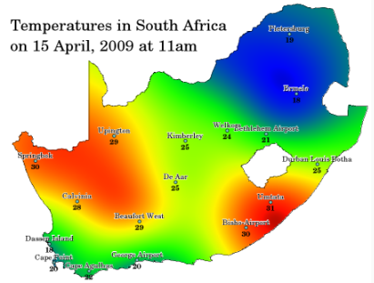
Druga grupa pytań dotyczy nie samej wartości, lecz struktury zmienności przestrzennej: na jaką odległość wartości pozostają do siebie podobne, jak szybko to podobieństwo maleje i czy jest ono jednakowe we wszystkich kierunkach. Odpowiedzi na te pytania udziela geostatystyka — i to ona dostarcza również najlepszej odpowiedzi na pytanie pierwsze, bo szacuje wartość wraz z oceną własnej niepewności.
Wszystkie ryciny oparte na danych pomiarowych przedstawiają temperaturę powietrza zmierzoną w 247 lokalizacjach na obszarze o rozmiarach około 11,4 × 8,6 km; granica obszaru badań obejmuje 63,4 km². Dane są w układzie współrzędnych PL-1992, wyrażonym w metrach, więc wszystkie odległości podane niżej to metry, a temperatury — stopnie Celsjusza. Zmierzone wartości mieszczą się w przedziale od 7,88 do 24,94 °C, a wariancja próby wynosi 15,79.
Ten sam zbiór danych jest używany w czterech rozdziałach praktycznych tej części.
Pojęcia podstawowe
Interpolacja przestrzenna
Interpolacja przestrzenna (ang. spatial interpolation) to szacowanie wartości analizowanej cechy w punkcie, dla którego nie ma danych pomiarowych. Opiera się na zbiorze punktów pomiarowych oraz na zidentyfikowanych na ich podstawie regułach podobieństwa przestrzennego, malejącego wraz z odległością.
Sformułowanie to jest mocniejsze, niż się na pierwszy rzut oka wydaje: reguły podobieństwa nie są przyjmowane z góry, lecz wyprowadzane z danych. Jak dokładnie — zależy od metody, i właśnie ta różnica dzieli metody interpolacji na dwie grupy.
Interpolacja ma sens tylko wtedy, gdy interpolowana cecha charakteryzuje się ciągłością zmienności przestrzennej, rozumianą jako tendencja wzrostu zróżnicowania wartości wraz ze wzrostem odległości pomiędzy punktami. Chwilowa temperatura powietrza tę własność ma; wysokość chwilowego opadu — już nie, bo między punktem w strefie opadu a punktem poza nią różnica jest skokowa, niezależnie od dzielącej je odległości.
Powierzchnia statystyczna i siatka interpolacyjna
Wynikiem interpolacji jest zwykle mapa rastrowa, nazywana też powierzchnią statystyczną (ang. statistical surface). Wartości oblicza się najczęściej w centrach poszczególnych komórek rastra: każda komórka jest jednym punktem estymacji, a zbiór tych punktów nazywany jest siatką interpolacyjną (ang. interpolation grid).
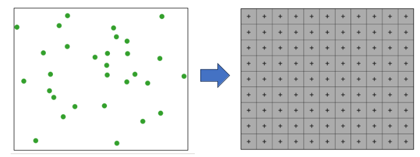
Rozdzielczość siatki jest decyzją analityka, a nie własnością danych: im mniejsza komórka, tym więcej punktów estymacji i dłuższe obliczenia, przy niezmienionej liczbie pomiarów.
Sąsiedztwo szukania
Oszacowania w danej lokalizacji zazwyczaj nie liczy się na całym zbiorze danych, lecz na ograniczonej liczbie najbliższych punktów pomiarowych. Ten ograniczony zbiór nazywany jest sąsiedztwem szukania (ang. search neighborhood) i definiuje go analityk, podając:
- maksymalną liczbę najbliższych obserwacji, które mogą zostać użyte w obliczeniach,
- maksymalny promień uwzględnianego sąsiedztwa, czyli rozmiar ruchomego okna,
- minimalną liczbę obserwacji wymaganych w zadanym promieniu — jeżeli jest ich mniej, obliczeń w tym oknie nie wykonuje się.
Sąsiedztwo szukania nie jest własnością żadnej konkretnej metody. Dotyczy zarówno metod deterministycznych, jak i wszystkich wariantów krigingu.
Oznaczenia
Opis zmienności przestrzennej posługuje się czterema symbolami, które powracają we wszystkich wzorach tego rozdziału:
- \(u_{\alpha}\) — wektor współrzędnych, czyli lokalizacja punktu pomiarowego,
- \(z(u_{\alpha})\) — wartość badanej cechy \(z\) w lokalizacji \(u_{\alpha}\), określana jako ogon (ang. tail),
- \(h\) — odstęp (ang. lag), czyli wektor przesunięcia pomiędzy dwiema lokalizacjami,
- \(z(u_{\alpha}+h)\) — wartość cechy w lokalizacji odległej od \(u_{\alpha}\) o odstęp \(h\), określana jako głowa (ang. head).
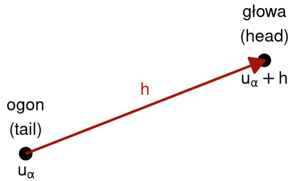
Nazwy „głowa” i „ogon” wskazują zwrot wektora \(h\) i mają znaczenie wtedy, gdy zmienność przestrzenna zależy nie tylko od odległości, ale także od kierunku.
Klasyfikacja metod interpolacji
Metody interpolacji dzielą się na deterministyczne i (geo)statystyczne. Podział ten nie dotyczy wyglądu wyniku, lecz tego, skąd biorą się parametry metody i co metoda zwraca.
| Metody deterministyczne | Metody (geo)statystyczne |
|---|---|
| Parametry są zazwyczaj ustalane w oparciu o określaną często arbitralnie funkcję odległości lub powierzchni | Parametry określane są w oparciu o teorię prawdopodobieństwa |
| Brak szacunków oceny błędu modelu | Wynik estymacji zawiera także oszacowanie błędu |
| Prostota oraz krótki czas obliczeń | Wymagają większych zasobów sprzętowych |
| Metoda diagramów Woronoja, metoda średniej ważonej odwrotnością odległości (IDW), funkcje wielomianowe, funkcje sklejane | Kriging |
Dwa wiersze środkowe są rozstrzygające. Metoda deterministyczna zwraca jedną liczbę — oszacowanie — i nie mówi nic o tym, jak bardzo można mu ufać. Metoda geostatystyczna zwraca dwie: oszacowanie oraz miarę niepewności tego oszacowania. Za tę informację płaci się czasem obliczeń oraz koniecznością wcześniejszego opisania struktury przestrzennej danych.
Metody deterministyczne
Diagramy Woronoja
Metoda diagramów Woronoja (ang. Voronoi diagram) polega na stworzeniu nieregularnych poligonów na podstawie analizowanych punktów, a następnie wpisaniu w każdy poligon wartości odpowiadającego mu punktu. Każdy poligon obejmuje obszar, dla którego dany punkt pomiarowy jest najbliższy.
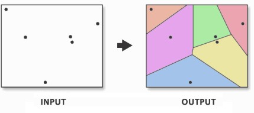
W systemach informacji geograficznej metoda ta znana jest także jako metoda poligonów Thiessena — od nazwiska amerykańskiego meteorologa Alfreda Thiessena, który zastosował ją do wyznaczania średniej sumy opadów w zlewni na podstawie wyników z kilku posterunków pomiarowych.
Wynik jest powierzchnią skokową: wartość pozostaje stała wewnątrz poligonu i zmienia się nagle na jego krawędzi. Zbiór wartości na mapie jest dokładnie zbiorem wartości zmierzonych — metoda nie liczy żadnych wartości pośrednich, lecz przepisuje pomiary.
Jedno z wczesnych zastosowań diagramów Woronoja wdrożył John Snow, badając epidemię cholery w londyńskiej dzielnicy Soho w 1854 roku. Wyznaczył obszary, dla których poszczególne pompy wodne były najbliższym źródłem zaopatrzenia w wodę, i porównał je z rozmieszczeniem zgonów.
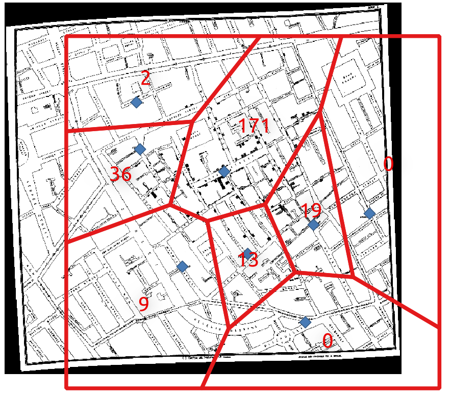
Metoda jest stosowana także poza interpolacją: do przyspieszania obliczeń wyznaczających najbliższego sąsiada, w badaniach wzorców wzrostu koron drzew, do wyznaczania najbliższego lotniska zapasowego na trasie lotu nad oceanem oraz do wyznaczania zasięgu potencjalnego rynku sieci sklepów lub obwodów szkolnych.
Metoda średniej ważonej odwrotnością odległości (IDW)
Metoda średniej ważonej odwrotnością odległości (ang. inverse distance weighted, IDW) jest jedną z najczęściej stosowanych metod interpolacji. Wartość analizowanej cechy w punkcie interpolacji wyznaczana jest jako średnia ważona z otaczających punktów pomiarowych, przy czym waga przypisana punktowi jest odwrotnie proporcjonalna do odległości. Im punkt bardziej oddalony, tym mniejszy jego wpływ na interpolowaną wartość.
Wartość w nieznanej lokalizacji obliczana jest ze wzoru:
\[z = \frac{\sum_{i=1}^{n} w_i z_i}{\sum_{i=1}^{n} w_i}\]
a waga \(w_i\) dla danego punktu — ze wzoru:
\[w_i = \frac{1}{d_{i}^{\,p}}\]
gdzie \(w_i\) to waga przypisana punktowi w lokalizacji \(i\), \(z_i\) — wartość cechy w lokalizacji \(i\), \(d_i\) — odległość tego punktu od lokalizacji szacowanej, a \(p\) — wykładnik potęgowy. Po podstawieniu wag do wzoru pierwszego otrzymujemy postać:
\[z = \frac{\sum_{i=1}^{n} \dfrac{z_i}{d_{i}^{\,p}}}{\sum_{i=1}^{n} \dfrac{1}{d_{i}^{\,p}}}\]
Przykład rachunkowy
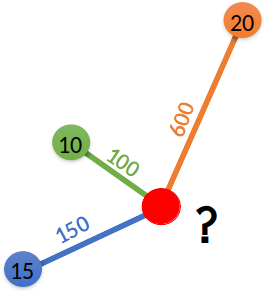
Dla wykładnika potęgowego równego 1:
\[z = \frac{10/100 + 15/150 + 20/600}{1/100 + 1/150 + 1/600} = \frac{\frac{60 + 60 + 20}{600}}{\frac{6 + 4 + 1}{600}} = \frac{\frac{140}{600}}{\frac{11}{600}} = \frac{140}{11} = 12{,}7272\]
Oszacowanie leży bliżej wartości 10 niż 20, mimo że 10 jest wartością skrajną — decyduje o tym odległość, nie wielkość pomiaru: punkt o wartości 10 leży sześciokrotnie bliżej niż punkt o wartości 20.
Wykładnik potęgowy
Wartość wykładnika ustalana jest arbitralnie. Domyślnie stosuje się 2, co oznacza, że wagi maleją z kwadratem odległości, więc punkty dwa razy dalsze mają wpływ czterokrotnie mniejszy. Wartość 0 oznacza, że wszystkie punkty mają taką samą wagę, a oszacowanie staje się zwykłą średnią arytmetyczną.
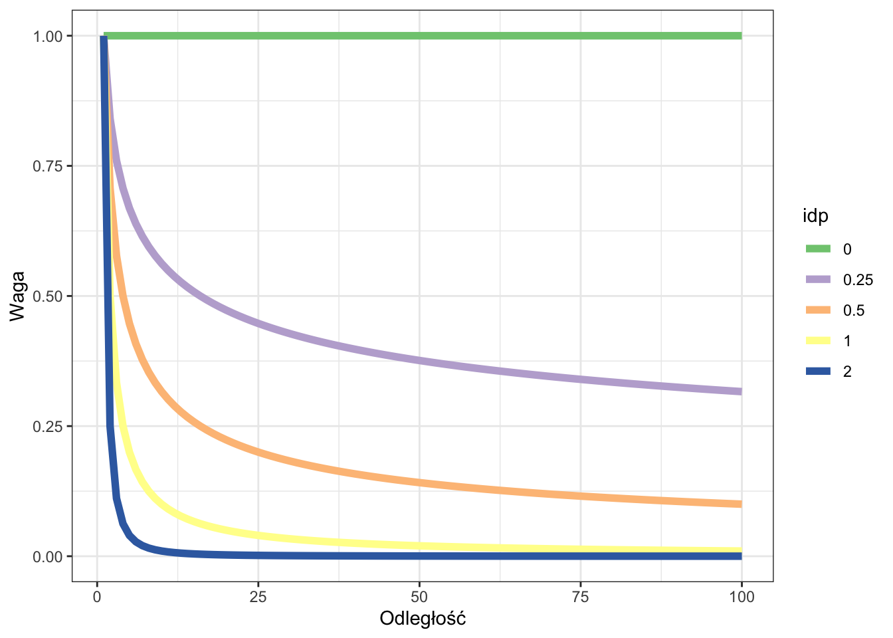
Wyższa wartość wykładnika oznacza, że:
- największy wpływ mają najbliższe punkty pomiarowe,
- powierzchnia jest bardziej szczegółowa, czyli mniej wygładzona,
- wraz ze wzrostem wykładnika wartość nieznanego punktu zbliża się do wartości najbliższego punktu pomiarowego.
Niższa wartość wykładnika oznacza większy wpływ punktów bardziej odległych i powierzchnię bardziej wygładzoną.
Dla przykładu powyżej wykładnik 0 daje 15, wykładnik 1 — 12,7272, a wykładnik 2 — 11,6981. Oszacowanie przesuwa się w stronę wartości punktu najbliższego, czyli 10.
Ograniczenia metody
- Jakość wyniku może się obniżyć, jeśli punkty pomiarowe są rozłożone nierównomiernie.
- Wartość minimalna oraz maksymalna może wystąpić tylko w lokalizacji punktów pomiarowych.
- Wartość w punkcie interpolacji mieści się w zakresie wartości punktów pomiarowych uwzględnionych w obliczeniu: średnia ważona nie może być większa niż najwyższa ani mniejsza niż najniższa wartość wejściowa.
- Metoda nie odzwierciedla zagłębień, wzniesień ani grzbietów, zatem nie pozwala oszacować wartości ekstremalnych wykraczających poza te, które zostały zmierzone.
Funkcje wielomianowe
Funkcje wielomianowe (ang. polynomials) to globalna interpolacja dopasowująca jedną gładką powierzchnię, zdefiniowaną funkcją matematyczną, do wszystkich danych punktowych. Stopień wielomianu określa, jak bardzo powierzchnia może się wyginać: stopień pierwszy daje płaszczyznę, wyższe stopnie dopuszczają wygięcia.
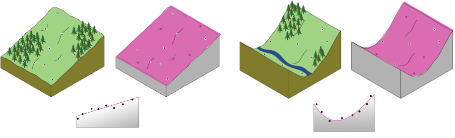
Ponieważ dopasowywana jest jedna funkcja do całego obszaru, każdy punkt pomiarowy wpływa na kształt powierzchni wszędzie. Stąd bierze się podstawowe ograniczenie metody: jest ona czuła na występowanie wartości odstających — pojedynczy nietypowy pomiar przechyla całą powierzchnię.
Metodę stosuje się tam, gdzie interpolowana wartość zmienia się stopniowo z regionu na region, na przykład przy rozprzestrzenianiu się zanieczyszczeń powietrza w obszarze przemysłowym, oraz do usuwania z danych trendu globalnego lub długodystansowego.
Funkcje sklejane
Funkcje sklejane (ang. splines) dopasowują do wartości analizowanych punktów krzywą powierzchnię. W wyniku otrzymuje się powierzchnię gładką, przechodzącą dokładnie przez punkty wejściowe — i to odróżnia je od funkcji wielomianowych, które przez punkty pomiarowe zwykle nie przechodzą, oraz od metody IDW, która punkty pomiarowe odtwarza, ale między nimi nie może wyjść poza zakres ich wartości.
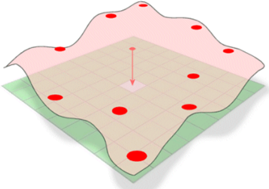
Metodę stosuje się do generowania delikatnie zmieniających się powierzchni: wysokości terenu, wysokości zwierciadła wody, stężenia zanieczyszczeń.
Funkcje sklejane są jedyną metodą deterministyczną, której część praktyczna nie wykonuje. Rozdziały ćwiczeniowe pokazują diagramy Woronoja, metodę IDW i funkcje wielomianowe (8 Metody interpolacji). Funkcje sklejane pozostają na poziomie interpretacyjnym: trzeba znać ich własność — przejście dokładnie przez punkty wejściowe — oraz ich miejsce w klasyfikacji metod.
Geostatystyka
Geostatystyka jest to zbiór narzędzi statystycznych uwzględniających w analizie danych ich przestrzenną i czasową lokalizację, a opartych o teorię funkcji losowych (Goovaerts 1997).
Cztery funkcje geostatystyki
- Identyfikacja i modelowanie struktury przestrzennej lub czasowej badanych cech. Polega na rozpoznawaniu i matematycznym opisywaniu prawidłowości w rozkładzie przestrzennym lub czasowym analizowanych cech. Wykorzystuje do tego między innymi semiwariogramy empiryczne, które pozwalają ocenić stopień autokorelacji danych.
- Estymacja — szacowanie wartości badanej cechy w nieopróbowanym miejscu lub momencie czasu. Najważniejszą grupą algorytmów estymacji jest kriging.
- Symulacja — generowanie sekwencji wielu alternatywnych, równie prawdopodobnych obrazów (realizacji) zmienności przestrzennej lub czasowej analizowanej cechy. Wykorzystuje mechanizmy losowe ograniczone koniecznością zachowania właściwości statystycznych danych, w tym ich semiwariogramu. Symulowane rozkłady służą do oceny niepewności.
- Optymalizacja próbkowania przestrzennego, czasowego lub czasoprzestrzennego. Polega na takim planowaniu rozmieszczenia punktów pomiarowych, aby zminimalizować koszty badań przy jednoczesnej maksymalizacji ilości i dokładności uzyskiwanych informacji. Wykorzystuje znaną lub zakładaną autokorelację przestrzenną badanej cechy, a czasem także wiedzę uprzednią.
Celem geostatystyki nie musi być zatem wyłącznie interpolacja. Może nim być również zrozumienie genezy zmienności przestrzennej lub czasowej analizowanej cechy, symulowanie wartości w celu oceny zakresu ich niepewności oraz optymalizacja sieci pomiarowej. Wszystkie trzy cele służą dostarczaniu informacji umożliwiających podejmowanie decyzji dotyczących wykorzystywania zasobów oraz ochrony środowiska i społeczeństwa przed skażeniami i katastrofami naturalnymi. Decyzje te podejmowane są najczęściej na podstawie niekompletnych i niepewnych danych — geostatystyka minimalizuje ryzyko decyzji złych.
Ścieżka postępowania
Estymacja geostatystyczna, zwana inaczej interpolacją geostatystyczną, przebiega według stałego schematu: od pomiarów przez opis i modelowanie struktury przestrzennej po oszacowanie wartości w całym obszarze.
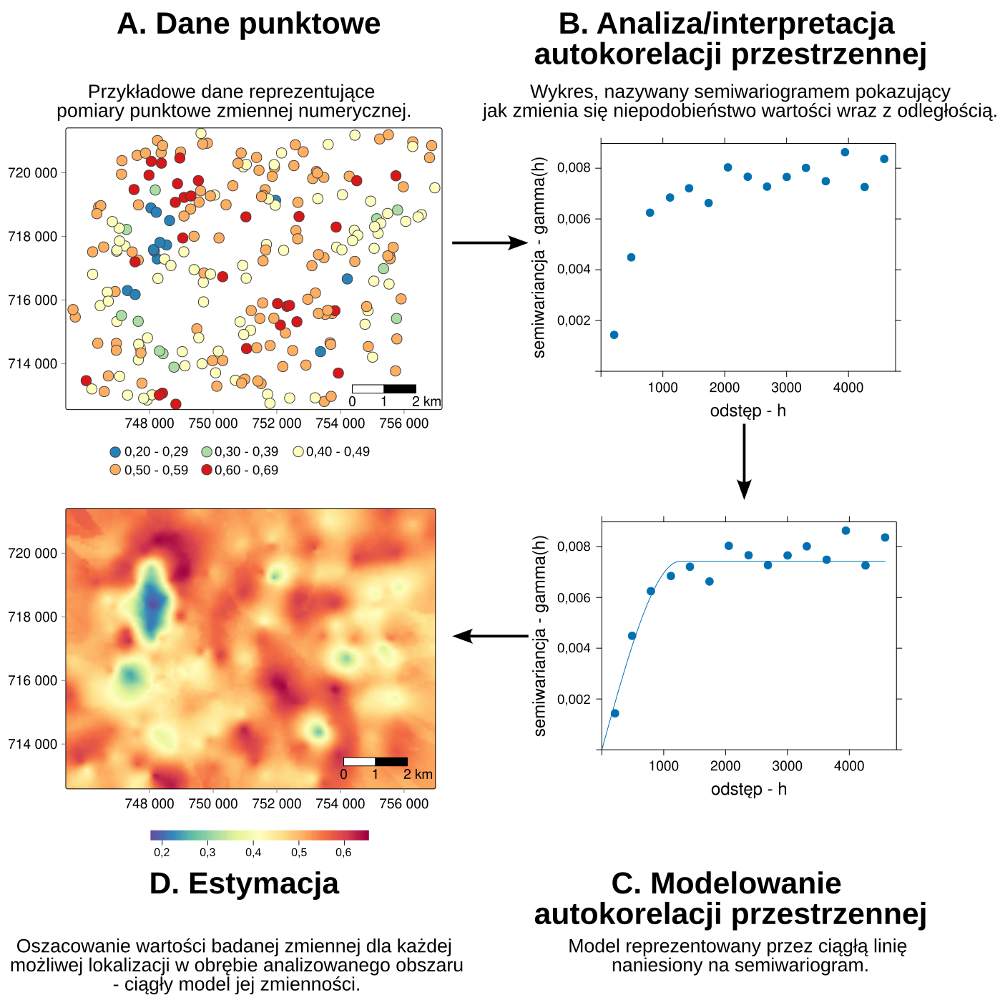
Pełna ścieżka postępowania składa się z siedmiu elementów:
- Zaprojektowanie sposobu (typu) próbkowania oraz organizacji zadań.
- Wykonanie pomiarów lub analiza laboratoryjna próbek.
- Wstępna eksploracja danych i ocena ich jakości.
- Analiza i modelowanie semiwariogramu na podstawie dostępnych danych, a czasem także wiedzy uprzedniej.
- Estymacja badanej cechy.
- Porównanie i ocena alternatywnych modeli.
- Stworzenie wynikowego produktu i jego dystrybucja.
Część praktyczna tej części skryptu obejmuje elementy od trzeciego do szóstego. Elementy pierwszy i drugi należą do zaprojektowania badania, a siódmy — do jego zamknięcia; obydwa stają się istotne przy samodzielnym doborze danych do projektu.
Założenia geostatystyki
Metody geostatystyczne opierają się na dwóch założeniach dotyczących analizowanej cechy.
- Przestrzenna ciągłość. Przestrzenna korelacja między wartościami analizowanej cechy w dwóch lokalizacjach zależy tylko od ich odległości, a czasem również od kierunku — lecz nie od tego, gdzie te lokalizacje są położone. Oznacza to także, że w obrębie obszaru analizy w każdej lokalizacji można określić wartość cechy i że nie ulega ona gwałtownym, skokowym zmianom.
- Stacjonarność. Lokalne średnie i wariancje, określane na podzbiorach danych, są na całym badanym obszarze względnie stałe — brak jest ich kierunkowych zmian, czyli trendów.
Naruszenie stacjonarności nie unieważnia obliczeń, ale zmienia sens ich wyniku: jeżeli w danych jest trend, semiwariogram opisuje łącznie trend i zmienność lokalną, a jego semiwariancja progowa rośnie, zamiast ustabilizować się na poziomie zbliżonym do wariancji próby.
Założenia dotyczące danych
Jednym z najważniejszych ograniczeń stosowania metod geostatystycznych jest spełnienie założeń dotyczących danych wejściowych. Dane te muszą:
- mieć dostateczną liczebność — minimalnie powyżej 30 obserwacji, ale zazwyczaj więcej niż 100–150,
- być reprezentatywne dla całego analizowanego obszaru,
- być stworzone przy zastosowaniu jednolitej metodyki,
- być wystarczająco dokładne.
Dane wejściowe nie mogą mieć tej samej lokalizacji, czyli tych samych współrzędnych. Dwa pomiary o identycznych współrzędnych dają parę punktów o odstępie zerowym, której semiwariancja nie daje się odróżnić od zmienności opisywanej efektem samorodka, a w obliczeniach estymacji prowadzi do układu równań bez jednoznacznego rozwiązania.
Analiza struktury przestrzennej
Wykres rozrzutu z przesunięciem
W klasycznej statystyce relację między wartościami dwóch cech określa się za pomocą korelacji, na przykład współczynnika korelacji liniowej Pearsona. W geostatystyce badamy tę samą cechę, ale pomiędzy dwoma lokalizacjami odległymi od siebie o pewien odstęp \(h\). Narzędziem jest wykres rozrzutu z przesunięciem (ang. h-scatterplot, lagged scatterplot).
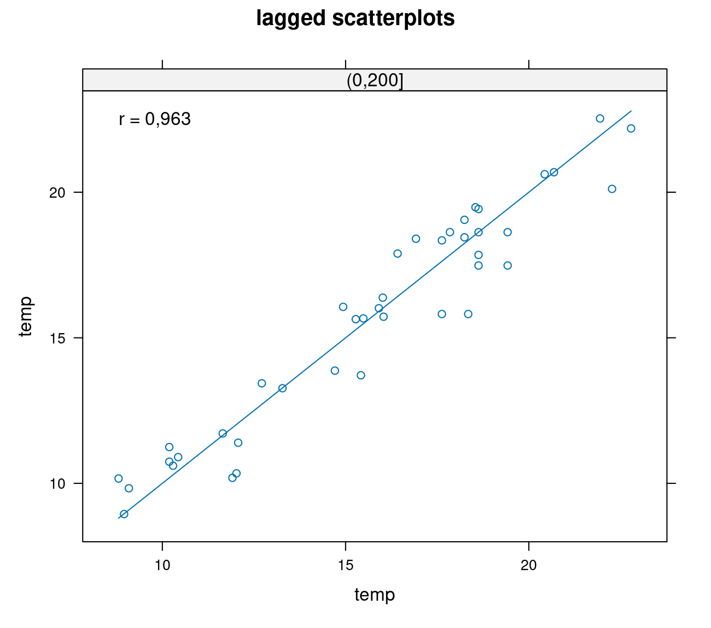
Punkty układają się blisko prostej: na dystansie do 200 m wartości cechy są niemal identyczne. Sporządzając taki wykres dla kolejnych, coraz większych przedziałów odległości, otrzymujemy obraz tego, jak szybko zanika to podobieństwo.
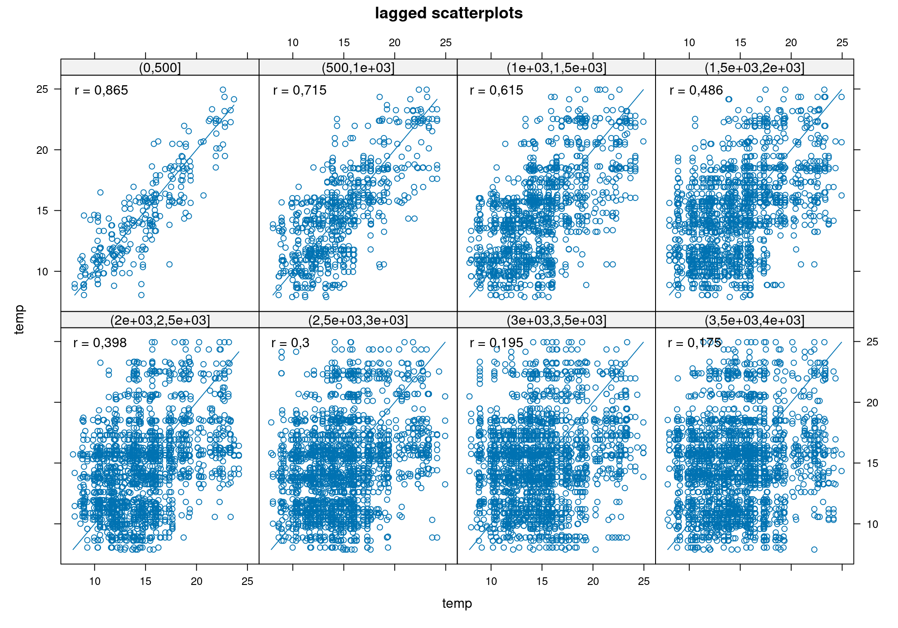
Dla temperatury powietrza współczynnik korelacji w pierwszym przedziale wynosi 0,865, a następnie maleje z każdym kolejnym przedziałem: 0,715, 0,615, 0,486, 0,398, 0,300, 0,195, aż do 0,175 w przedziale 3500–4000 m. Pozwala to stwierdzić, że cecha wykazuje regularną zmienność przestrzenną — podobieństwo jej wartości zmniejsza się wraz z odległością. Jest to dokładnie ta własność, której wymaga interpolacja.
Semiwariancja
Zmienność przestrzenną analizowanej cechy określa się za pomocą semiwariancji. Semiwariancja \(\gamma(h)\) to połowa kwadratu różnicy pomiędzy wartościami badanej cechy \(z\) w dwóch lokalizacjach odległych o wektor \(h\):
\[\gamma(h) = \frac{1}{2}\left(z(u_{\alpha}) - z(u_{\alpha} + h)\right)^{2}\]
Semiwariancja jest miarą niepodobieństwa: rośnie wtedy, gdy wartości w dwóch lokalizacjach różnią się od siebie. Jest więc przeciwieństwem korelacji — i dlatego semiwariogram cechy o regularnej zmienności przestrzennej rośnie wraz z odległością, podczas gdy korelacja maleje.
Przykład rachunkowy
Aby obliczyć semiwariancję dla pary punktów, trzeba znać wartość cechy w obu lokalizacjach. W danych temperatury pierwsza para punktów ma wartości \(z(u_{\alpha}) = 13{,}85\) °C oraz \(z(u_{\alpha}+h) = 15{,}48\) °C:
\[\gamma(h) = \frac{1}{2}\left(13{,}85 - 15{,}48\right)^{2} = \frac{1}{2}\left(-1{,}63\right)^{2} = \frac{1}{2} \times 2{,}6569 = 1{,}3285 \approx 1{,}33\]
Odległość między tymi punktami wynosi około 3240,89 m, możemy zatem w uproszczeniu stwierdzić, że dla tej pary punktów, odległych o 3240 m, wartość semiwariancji wynosi około 1,33.
Chmura semiwariogramu
Jeżeli w badanej próbie mamy \(n\) obserwacji, to możemy zaobserwować \(\frac{1}{2}n(n-1)\) par obserwacji. Dla temperatury powietrza, zmierzonej w 247 lokalizacjach, daje to 30 381 par. Dla każdej pary obliczana jest semiwariancja, a wynik można przedstawić na wykresie zwanym chmurą semiwariogramu (ang. variogram cloud). Położenie każdego punktu chmury określają dwie współrzędne: odległość między dwoma punktami oraz wartość semiwariancji dla tej pary.
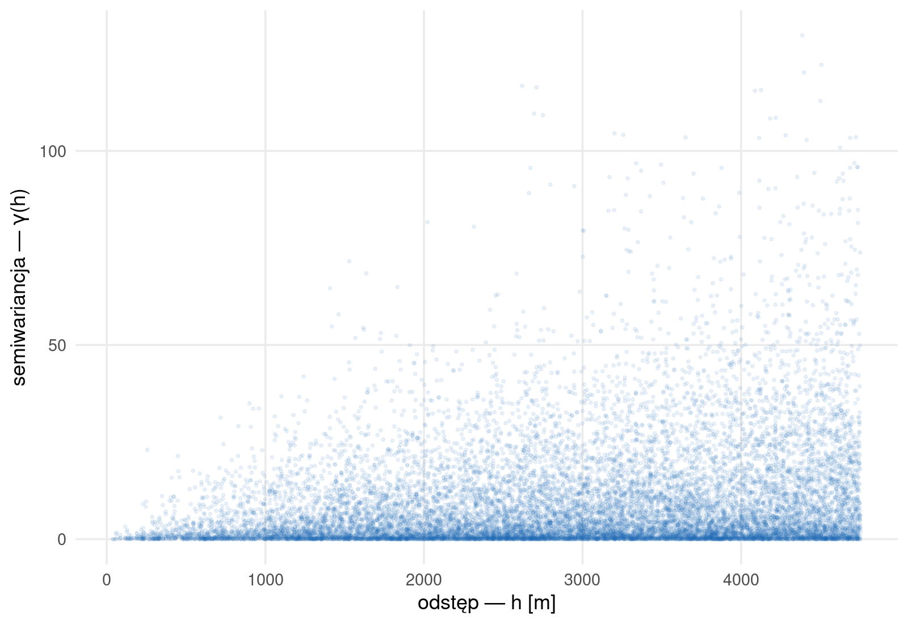
Chmura jest nieczytelna jako opis zmienności — przy trzydziestu tysiącach par trudno z niej odczytać prawidłowość. Jej wartość polega na czym innym: pozwala wskazać pary odstające, czyli pary bliskich sobie lokalizacji o bardzo wysokiej semiwariancji, które mogą sygnalizować błąd pomiaru lub wartość odstającą lokalnie.
Semiwariogram empiryczny
Semiwariogram empiryczny, czyli oparty na danych, jest wykresem pokazującym relację pomiędzy odległością a przeciętną wartością semiwariancji. Dla kolejnych odstępów wartość semiwariancji jest uśredniana i przedstawiana w odniesieniu do średniej odległości zbioru par punktów zawierających się w danym przedziale:
\[\hat{\gamma}(h) = \frac{1}{2N(h)}\sum_{\alpha=1}^{N(h)} \left(z(u_{\alpha}) - z(u_{\alpha}+h)\right)^{2}\]
gdzie \(N(h)\) oznacza liczbę par punktów zawartych w odstępie \(h\).
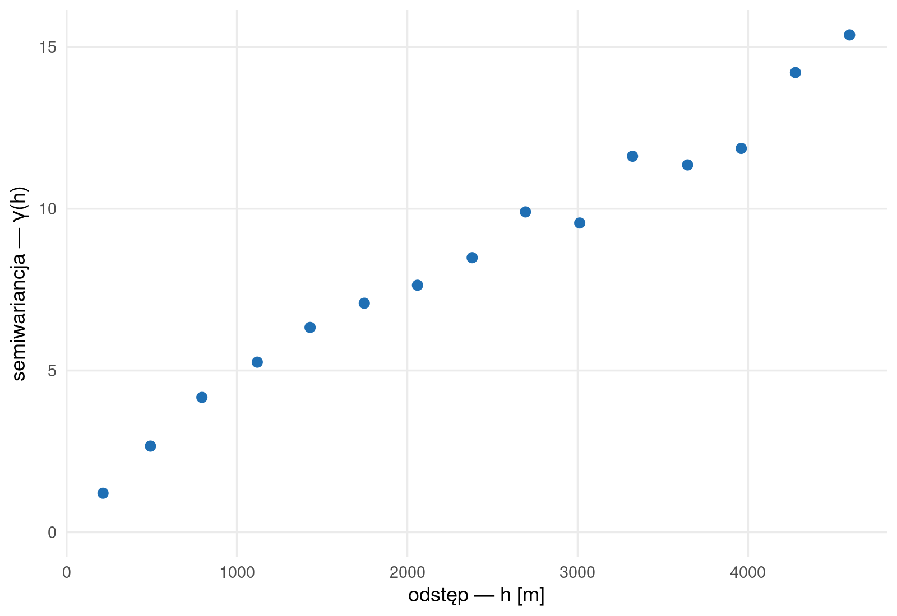
Semiwariancja rośnie od około 1,21 dla odstępu 214 m do około 15,37 dla odstępu 4596 m. Wartości cechy w lokalizacjach bliskich są więc do siebie znacznie bardziej podobne niż w lokalizacjach odległych — ta sama prawidłowość, którą pokazały wykresy rozrzutu z przesunięciem, wyrażona miarą niepodobieństwa zamiast miarą podobieństwa.
Modelowanie struktury przestrzennej
Dlaczego semiwariogram empiryczny nie wystarcza
Semiwariogram wyliczony z danych punktowych jest:
- nieciągły — wartości semiwariancji są średnimi przedziałowymi, więc istnieją tylko dla tych odstępów, które w danych wystąpiły,
- chaotyczny — badana próba jest jedynie przybliżeniem rzeczywistości, często dodatkowo obciążonym błędami. Źródłem błędu jest zarówno pomiar analizowanej cechy, czyli dokładność określenia wartości \(z(u_{\alpha})\), jak i błąd lokalizacji, czyli dokładność określenia wektora przesunięcia \(h\).
Estymacje i symulacje przestrzenne wymagają natomiast znajomości wartości semiwariancji dla każdej sensownej kombinacji odległości i kierunku, również takiej, która w danych pomiarowych nie wystąpiła. Modelowanie struktury przestrzennej polega więc na zastąpieniu dyskretnych miar empirycznych ciągłą funkcją matematyczną. Przy okazji modelowanie wygładza chaotyczne fluktuacje danych empirycznych.
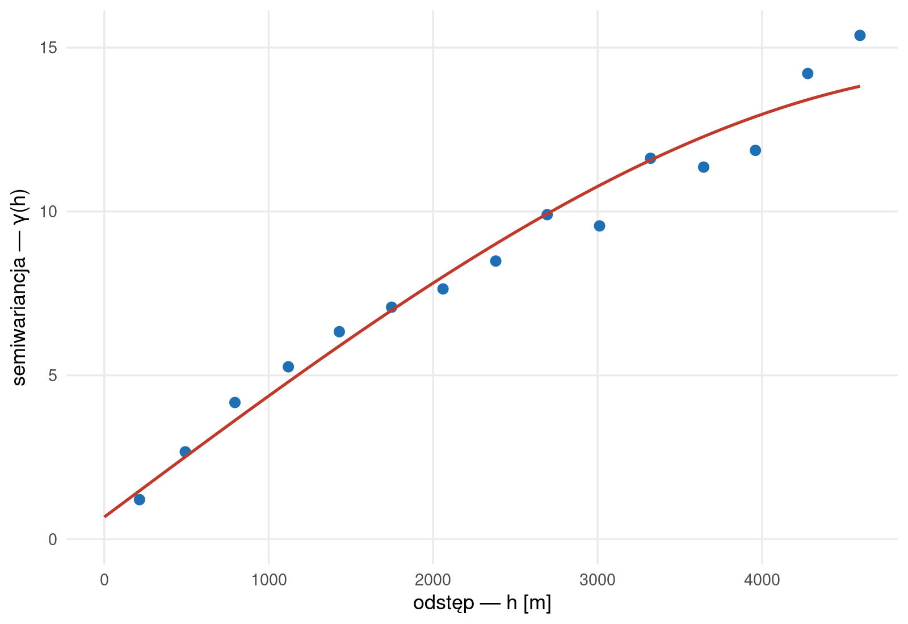
Trzy elementy modelu
Na podstawie modelu semiwariogramu można zazwyczaj określić trzy charakterystyki zmienności przestrzennej analizowanej cechy.
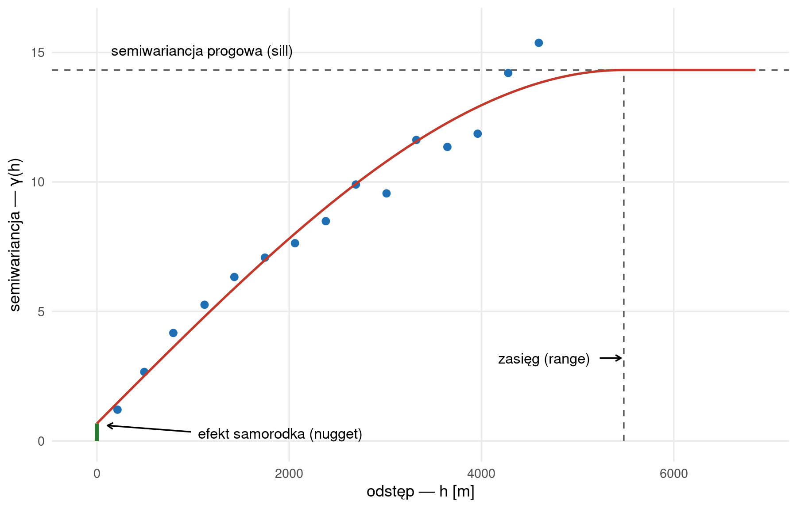
Efekt samorodka (ang. nugget) to szacowana wariancja dla odstępu \(h = 0\). W teorii dwa pomiary wykonane w tym samym miejscu i czasie powinny być identyczne, a semiwariancja dla zerowego odstępu powinna wynosić zero. Zazwyczaj tak nie jest — ze względu na błędy pomiarowe, nieznaną zmienność wartości analizowanej cechy w skali mniejszej niż najkrótszy odstęp między punktami pomiarowymi oraz zmienność w obrębie samej próbki.
Semiwariancja progowa (ang. sill) to maksymalny poziom zmienności danych w kontekście przestrzennym. Najczęściej, jeśli analizowana cecha jest stacjonarna, jest to wartość zbliżona do wariancji całej próby.
Zasięg (ang. range) to odległość, na której semiwariogram osiąga wartość semiwariancji progowej. Określa maksymalny zasięg autokorelacji danych: pary lokalizacji odległe o więcej niż zasięg nie są już do siebie bardziej podobne niż dwie lokalizacje wybrane losowo.
Dla temperatury powietrza model sferyczny daje efekt samorodka 0,68, semiwariancję progową 14,32 i zasięg 5480 m. Semiwariancja progowa jest tu zbliżona do wariancji próby wynoszącej 15,79, ale nie jest jej równa — różnica wynosi około 9%.
Dlaczego nie używamy dowolnych funkcji
W modelowaniu struktury przestrzennej nie stosuje się dowolnych funkcji matematycznych, lecz ściśle określoną grupę tak zwanych funkcji (modeli) dozwolonych.
Głównym powodem jest wymóg dodatniej określoności modelu. Model semiwariogramu jest wykorzystywany do wyznaczania wag w równaniach krigingu, a tylko wybrane funkcje gwarantują, że macierz układu równań krigingu będzie możliwa do rozwiązania i że wynikowa wariancja zawsze będzie dodatnia.
W praktyce ograniczenie wyboru funkcji nie stanowi znaczącej bariery w dobrym odwzorowaniu semiwariogramu, ponieważ wolno używać dowolnej kombinacji liczby i typu funkcji dozwolonych.
Modele podstawowe
Najczęściej używane modele podstawowe to: nuggetowy, sferyczny, gaussowski, potęgowy i wykładniczy.
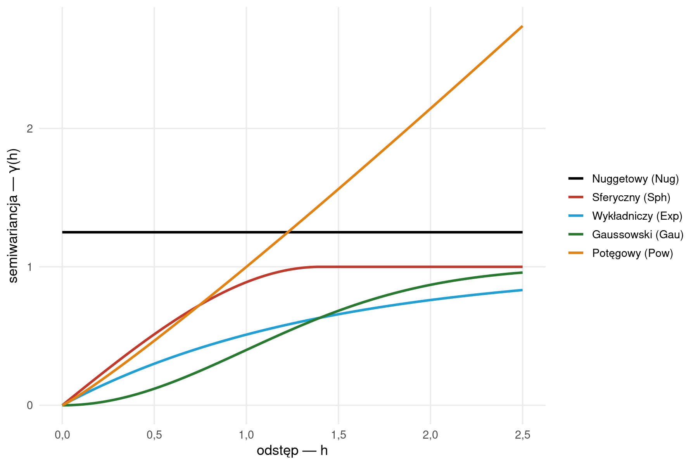
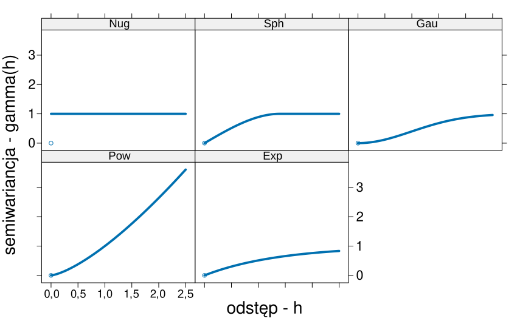
Model nuggetowy
Model nuggetowy (ang. nugget effect model) określa sytuację, w której wartość analizowanej cechy nie wykazuje autokorelacji — niepodobieństwo jej wartości nie wzrasta wraz z odległością.
\[\gamma(h) = \begin{cases} 0 & \text{dla } h = 0 \\ C_0 > 0 & \text{dla } h > 0 \end{cases}\]
Model nuggetowy zazwyczaj nie jest używany samodzielnie — w większości zastosowań stanowi element modelu złożonego. Konieczność użycia go samodzielnie oznacza zazwyczaj, że odstęp próbkowania był większy niż zasięg autokorelacji: dane zostały zebrane zbyt rzadko, aby struktura przestrzenna cechy mogła się w nich ujawnić. Jako składowa modelu złożonego służy do oszacowania między innymi błędu pomiarowego i zmienności na krótkich odstępach.
Model sferyczny
Model sferyczny (ang. spherical model, Sph) jest jednym z najczęściej stosowanych modeli geostatystycznych.
\[\gamma(h) = \begin{cases} 0 & \text{dla } h = 0 \\ C \left[ \dfrac{3}{2} \left( \dfrac{h}{a} \right) - \dfrac{1}{2} \left( \dfrac{h}{a} \right)^{3} \right] & \text{dla } 0 < h \leq a \\ C & \text{dla } h > a \end{cases}\]
gdzie \(\gamma(h)\) to semiwariancja dla odległości \(h\), \(C\) — semiwariancja progowa, \(a\) — zasięg.
W swoim początkowym odcinku, blisko początku układu współrzędnych, model ma charakter funkcji liniowej o nachyleniu \(3C/2a\). Reprezentuje cechę, której zmienność ma charakter naprzemiennych płatów niskich i wysokich wartości; średnio płaty te mają średnicę określoną przez zasięg modelu.
Model sferyczny najlepiej oddaje naturę zjawisk fizycznych o wyraźnym i skończonym zasięgu oddziaływania: zawartości metali ciężkich lub azotu w glebie, gdzie procesy lokalne dominują nad trendami regionalnymi, zasięgów złóż mineralnych oraz lokalnych zanieczyszczeń gleby.
Model wykładniczy
Model wykładniczy (ang. exponential model, Exp), obok sferycznego, jest jednym z najczęściej stosowanych modeli geostatystycznych.
\[\gamma(h) = \begin{cases} 0 & \text{dla } h = 0 \\ C \left[ 1 - \exp\left( -\dfrac{3h}{a} \right) \right] & \text{dla } h > 0 \end{cases}\]
gdzie \(\gamma(h)\) to semiwariancja dla odległości \(h\), \(C\) — semiwariancja progowa, \(a\) — zasięg. Zastosowanie we wzorze mnożnika 3 umożliwia interpretowanie parametru \(a\) jako zasięgu praktycznego.
Model ma charakter liniowy w fazie początkowej, ale o większym nachyleniu niż sferyczny — wynoszącym \(3C/a\), czyli dwukrotnie większym od \(3C/2a\) modelu sferycznego. Wzrost semiwariancji przy bardzo małych odległościach jest zatem znacznie szybszy niż w modelu sferycznym, co oznacza, że wartości zmieniają się gwałtownie nawet między bliskimi punktami. Model wykładniczy opisuje zatem zjawiska o niskiej ciągłości przestrzennej.
Od modelu sferycznego odróżnia go szczególnie to, że nie ma skończonego zasięgu. Podczas gdy model sferyczny w pewnym punkcie staje się płaską linią, model wykładniczy zbliża się do progu asymptotycznie. Teoretycznie oznacza to, że punkty wykazują podobieństwo nawet na bardzo dużych dystansach, choć wpływ ten szybko maleje. Z tego powodu dla modelu wykładniczego wyznacza się zasięg praktyczny (ang. practical range): odległość, przy której model osiąga 95% wartości semiwariancji progowej.
Model stosuje się do modelowania opadów deszczu, które często zmieniają się gwałtownie na małym obszarze, parametrów chemicznych gleby o dużej zmienności lokalnej, takich jak zasolenie i pH, zmienności odczynu gleby wynikającej z różnic między typami gleb oraz stężeń pyłów zawieszonych w miastach, gdzie lokalne źródła tworzą silne, ale szybko wygasające różnice przestrzenne.
Model gaussowski
Model gaussowski (ang. Gaussian model, Gau) wyróżnia się parabolicznym kształtem na początkowym odcinku. Oznacza to, że wartości w punktach położonych blisko siebie są niemal identyczne.
\[\gamma(h) = \begin{cases} 0 & \text{dla } h = 0 \\ C \left[ 1 - \exp\left( -\dfrac{3h^{2}}{a^{2}} \right) \right] & \text{dla } h > 0 \end{cases}\]
gdzie \(\gamma(h)\) to semiwariancja dla odległości \(h\), \(C\) — semiwariancja progowa, \(a\) — zasięg.
Tak jak model wykładniczy, model gaussowski ma charakter asymptotyczny — semiwariancję progową osiąga w nieskończonym odstępie — więc i dla niego wyznacza się zasięg praktyczny.
Model gaussowski tworzy ekstremalnie gładką powierzchnię, która może maskować lokalną zmienność. Z uwagi na tę cechę zazwyczaj nie powinien być stosowany samodzielnie, lecz jako element modelu złożonego.
Stosuje się go do modelowania cech o regularnej i łagodnej zmienności przestrzennej: poziomu zwierciadła wód gruntowych w obszarze o mało zróżnicowanej rzeźbie i jednolitej budowie geologicznej, ciśnienia atmosferycznego lub temperatury w stabilnych masach powietrza, terenu o łagodnych, falistych kształtach oraz głębokości zalegania ciągłych warstw skalnych nieprzerwanych uskokami.
Model potęgowy
Model potęgowy (ang. power model, Pow) różni się fundamentalnie od pozostałych modeli podstawowych, ponieważ jest modelem nieograniczonym: jego wartość rośnie w nieskończoność, dlatego niemożliwe jest określenie ani jego zasięgu, ani semiwariancji progowej.
\[\gamma(h) = \begin{cases} 0 & \text{dla } h = 0 \\ \omega h^{k} & \text{dla } h > 0 \end{cases} \qquad \text{przy czym } 0 < k < 2\]
gdzie \(\omega\) to parametr skali, czyli nachylenie krzywej, a \(k\) — wykładnik potęgowy, który musi mieścić się w przedziale \((0, 2)\).
Wykładnik \(k\) w zakresie od 0 do 1 daje model wypukły „w górę”, \(k = 1\) to linia prosta, a \(k\) w zakresie od 1 do 2 — model wypukły „w dół”.
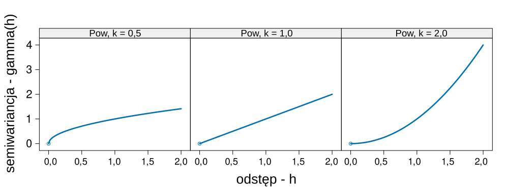
Model stosuje się, gdy obszar badań jest mniejszy niż zasięg autokorelacji, do opisu przepuszczalności skał lub rozprzestrzeniania się zanieczyszczeń w bardzo dużej skali, gdzie zmienność narasta wraz ze skalą obserwacji, oraz w analizie fraktalnej procesów wyglądających podobnie niezależnie od powiększenia.
Model złożony
Najczęściej pojedynczy model nie jest w stanie dokładnie odwzorować zmienności przestrzennej analizowanej cechy. Model złożony to połączenie dwóch lub więcej modeli podstawowych. Najbardziej powszechny model złożony składa się z funkcji nuggetowej, działającej dla odległości \(h = 0\), oraz drugiej funkcji, działającej dla odległości \(h > 0\).
Model opisujący temperaturę powietrza w przykładzie tego rozdziału jest właśnie modelem złożonym: składa się z funkcji nuggetowej o wartości 0,68 oraz funkcji sferycznej wnoszącej 13,65. Semiwariancja progowa całego modelu to suma obu składowych, czyli 14,32.
Wybór modelu zmienia wynik estymacji
Model semiwariogramu nie jest ozdobnikiem poprzedzającym obliczenia — to on wyznacza wagi w równaniach krigingu, więc jego wybór zmienia obraz powierzchni estymowanej.
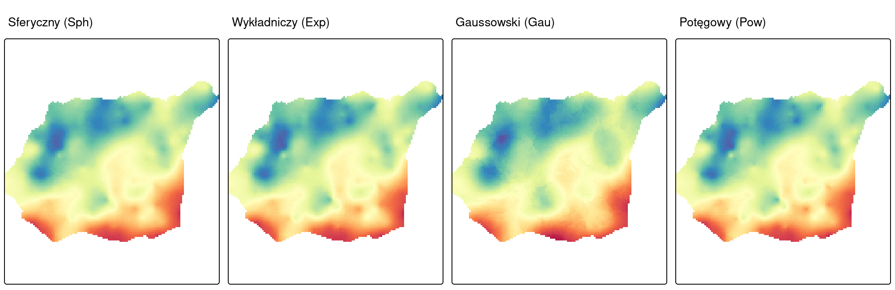
Ogólny wzorzec przestrzenny jest we wszystkich czterech przypadkach ten sam — niższe temperatury w północnej części obszaru, wyższe w południowej — ale szczegół różni się wyraźnie. Model gaussowski, o parabolicznym początku, daje powierzchnię najgładszą; model wykładniczy, o najszybszym wzroście semiwariancji na krótkich dystansach, daje obraz najbardziej poszarpany, z wyraźnymi lokalnymi szczytami i zagłębieniami wokół punktów pomiarowych. Model potęgowy, nieograniczony, daje mapę zdominowaną przez zmienność wielkoskalową.
Estymacja: kriging
Kriging to nazwa własna grupy algorytmów geostatystycznych służących do estymacji wartości cechy ciągłej w dowolnej, nieopróbowanej lokalizacji na podstawie ograniczonego zbioru danych pomiarowych z danego obszaru. Nazwa została nadana dla uhonorowania pionierskich prac geologa Daniela Krige’a (Krige 1951); podstawy teoretyczne metody sformułował Matheron (1963).
Skąd biorą się wagi
Kriging zakłada, że wartość cechy w danej lokalizacji zależy od sąsiednich obserwacji, którym przypisuje się odpowiednie wagi. Wagi wyznaczane są na podstawie charakteru i siły autokorelacji przestrzennej, określonej z danych pomiarowych — stąd bierze się istotna rola semiwariogramów.
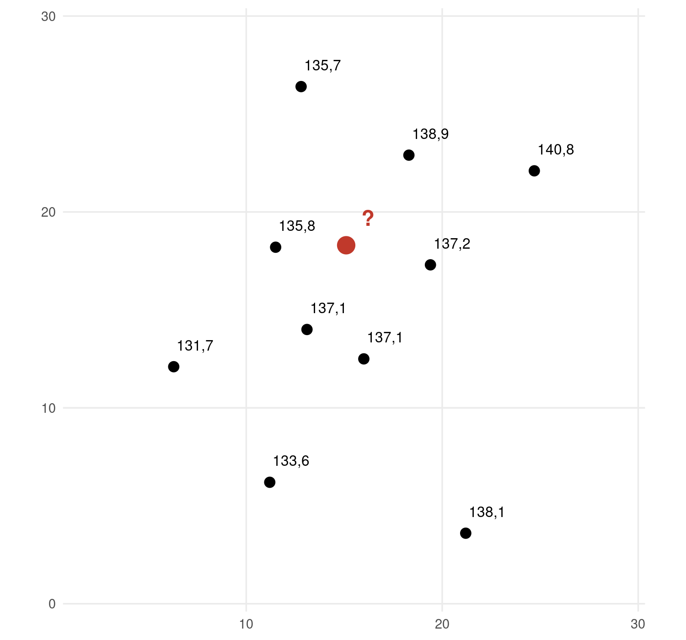
Wagi zależą od zmieniającego się wraz z odległością, a czasem i kierunkiem, podobieństwa wartości. Punkty mające podobne wartości i położone bliżej lokalizacji szacowanej otrzymują wyższą wagę niż punkty położone dalej lub niewykazujące korelacji przestrzennej.
Przy ustalaniu wag uwzględniany jest także przestrzenny rozkład punktów: zgrupowane punkty o podobnych wartościach otrzymują mniejszą wagę niż pojedynczy punkt położony w tej samej odległości, ponieważ przekazują one łącznie mniej informacji niż pojedyncza lokalizacja. Jest to własność, której metody deterministyczne nie mają — w metodzie IDW grupa pięciu blisko siebie położonych punktów ma pięciokrotnie większy wpływ niż pojedynczy punkt w tej samej odległości, choć niesie niemal tę samą informację.
Pięć kroków estymacji
Krok 1. Wykonanie semiwariogramu empirycznego na podstawie dostępnych danych.
Krok 2. Dopasowanie modelu do semiwariogramu empirycznego. Dzięki dopasowaniu funkcji ciągłej można odczytać wartość semiwariancji dla dowolnej kombinacji odległości i kierunku, również takiej, która nie wystąpiła w danych pomiarowych. Im lepiej dopasowany model, tym odczytane wartości semiwariancji bliższe tym, które uzyskalibyśmy z danych dla całej populacji.
Krok 3. Obliczenie wag dla punktów używanych w estymacji. W krigingu nieznana wartość cechy w lokalizacji \(u\) obliczana jest jako średnia ważona:
\[\hat{Z}(u) - m(u) = \sum_{\alpha=1}^{n(u)} \lambda_{\alpha}(u)\left[\,Z(u_{\alpha}) - m(u_{\alpha})\,\right]\]
gdzie:
- \(\hat{Z}(u)\) — estymowana (szacowana) wartość cechy w lokalizacji \(u\),
- \(m(u)\) oraz \(m(u_{\alpha})\) — średnie wartości w punkcie estymacji \(u\) oraz w punktach pomiarowych \(u_{\alpha}\),
- \(\lambda_{\alpha}(u)\) — waga przypisana lokalizacji \(u_{\alpha}\),
- \(Z(u_{\alpha})\) — zmierzona wartość cechy \(Z\) w lokalizacji \(u_{\alpha}\),
- \(n(u)\) — liczba danych pomiarowych użytych do estymacji, zazwyczaj ograniczona do punktów leżących w sąsiedztwie szukania wokół estymowanego punktu \(u\).
Warunek nieobciążoności estymatora przyjmuje w poszczególnych wariantach krigingu różną postać. W krigingu zwykłym i krigingu z trendem średnia jest nieznana, więc nieobciążoność wymusza się, nakładając na wagi warunek \(\sum_{\alpha} \lambda_{\alpha}(u) = 1\) — gdyby wagi sumowały się do innej wartości, oszacowanie byłoby systematycznie zawyżone albo zaniżone względem poziomu danych. W krigingu prostym średnia jest znana, więc warunku tego nie trzeba nakładać: wagi sumują się tam do wartości mniejszej od 1, a brakującą część, \(1 - \sum_{\alpha} \lambda_{\alpha}(u)\), przejmuje znana średnia \(m\) (Goovaerts 1997). Im dalej od punktów pomiarowych, tym większa ta część — i dlatego estymacje krigingu prostego dążą na obrzeżach obszaru do średniej globalnej.
Wagi obliczane są poprzez rozwiązanie układu równań macierzowych:
\[K \cdot \lambda = k\]
gdzie \(K\) to macierz semiwariancji między wszystkimi znanymi lokalizacjami pomiarowymi, \(k\) — wektor semiwariancji między znanymi lokalizacjami \(u_{\alpha}\) a punktem estymowanym \(u\), a \(\lambda\) — wektor wag dla poszczególnych punktów pomiarowych.
Aby wyznaczyć wagi, trzeba znać trzy rzeczy:
- odległości między wszystkimi parami lokalizacji punktów pomiarowych,
- odległości między lokalizacjami punktów pomiarowych a lokalizacją punktu estymowanego,
- dopasowany model semiwariogramu, czyli funkcję opisującą przestrzenną autokorelację występującą w danych.
Dwie pierwsze informacje pochodzą ze współrzędnych, trzecia — z Kroku 2. Model semiwariogramu zamienia odległości na semiwariancje, a semiwariancje — przez układ równań — na wagi.
Krok 4. Wykonanie estymacji wybraną metodą krigingu.
Krok 5. Wizualizacja estymacji i wariancji krigingowej. Estymacje wykonuje się najczęściej nie dla jednego punktu, lecz dla zdefiniowanej siatki węzłów, więc wynik obliczeń przedstawiany jest w postaci mapy rastrowej.
Dwa wyniki krigingu
W wyniku krigingu otrzymujemy dwie informacje:
- Estymację — oszacowaną wartość cechy w lokalizacji o nieznanej wartości, \(\hat{Z}(u)\).
- Wariancję krigingową — względną ocenę błędu (niepewności) estymacji w danym punkcie, wynikającą z niepewności związanej z rozmieszczeniem punktów pomiarowych oraz z przyjętym modelem, a nie z konkretnych wartości badanej cechy.
Wariancja krigingowa
Wariancja krigingowa, zwana też wariancją estymacji, nie zależy od zmierzonych wartości punktów pomiarowych, lecz od ich wzajemnego położenia, ich liczby oraz od modelu semiwariogramu.
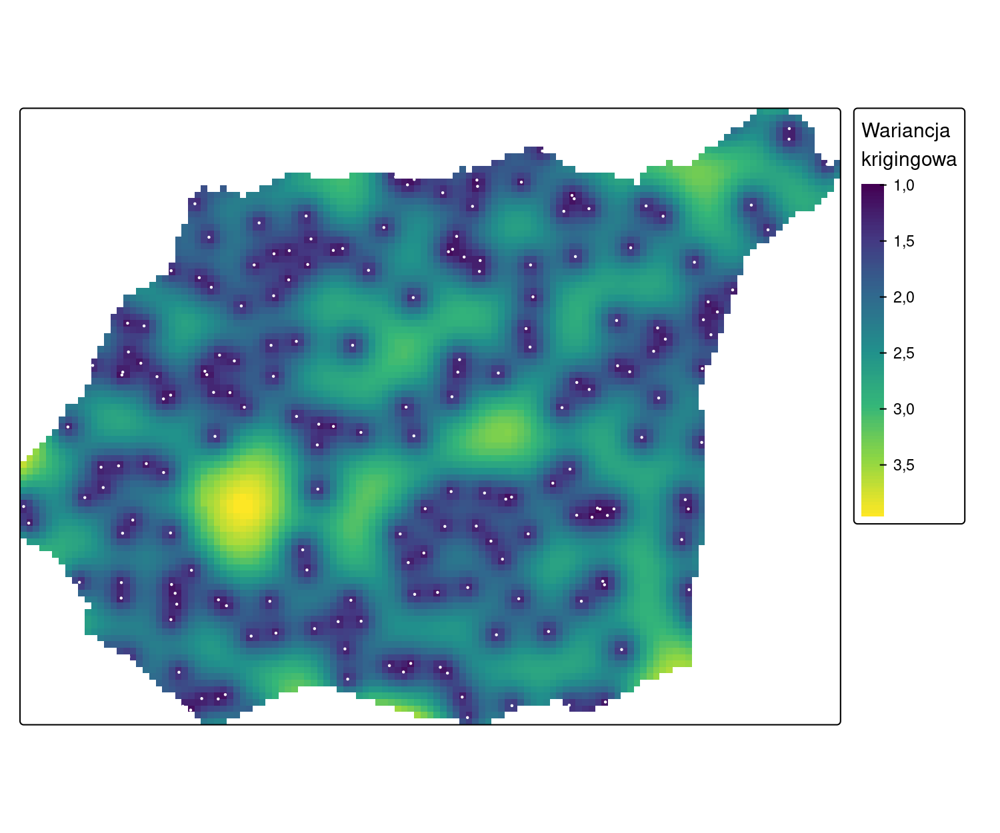
Wariancja krigingowa przyjmuje najniższe wartości w pobliżu punktów pomiarowych, a najwyższe w obszarach rzadko opróbowanych:
- im więcej punktów pomiarowych w sąsiedztwie, tym mniejszy błąd,
- w lokalizacji punktu pomiarowego wariancja krigingowa wynosi zero — kriging zwraca tam dokładnie wartość zmierzoną,
- wariancja rośnie wraz z oddalaniem się od lokalizacji punktów pomiarowych: im dalej od punktów pomiarowych znajduje się punkt \(u\), tym mniejsza jest korelacja przestrzenna, co powoduje wzrost niepewności.
Na mapie powyżej najniższa wartość wynosi 0,99, a nie zero — nie dlatego, że estymacja w lokalizacji pomiaru jest obarczona niepewnością, lecz dlatego, że żaden środek komórki siatki nie pokrywa się dokładnie z punktem pomiarowym. Przy rozdzielczości 90 m środek najbliższej komórki może leżeć nawet 64 m od pomiaru, a na takim dystansie wariancja już wyraźnie wzrosła.
Z zależności tych wynika praktyczne zastosowanie wariancji krigingowej: jest ona dobrym narzędziem do oceny jakości sieci pomiarowej, bo pokazuje, gdzie brakuje danych. Może być natomiast niewystarczająca do oceny lokalnej niepewności wynikającej z samej zmienności zjawiska. Intuicyjnie czujemy, że przy jednakowej konfiguracji przestrzennej punktów danych niepewność oszacowania będzie większa wtedy, kiedy zmierzone wartości cechy różniły się między sobą znacznie, niż wtedy, kiedy były do siebie podobne — wariancja krigingowa będzie zaś w obu sytuacjach identyczna.
Wariancja krigingowa opisuje geometrię sieci pomiarowej i przyjęty model, a nie trafność oszacowań. Jej mapę można narysować przed wykonaniem jakiegokolwiek pomiaru wartości cechy — wystarczą współrzędne punktów i model semiwariogramu. Pytanie, o ile estymacja rozminęła się z rzeczywistością, wymaga porównania wartości estymowanych ze zmierzonymi, czyli walidacji.
Warianty krigingu
Istnieje szereg metod krigingu. Do trzech podstawowych zalicza się kriging prosty, kriging zwykły i kriging z trendem. Różnią się one założeniem o średniej wartości analizowanej cechy — nie sposobem obliczania wag ani definicją sąsiedztwa szukania, które są dla nich wspólne.
Kriging prosty (ang. simple kriging, SK) zakłada, że średnia wartość analizowanej cechy jest znana i stała na całym analizowanym obszarze.
Kriging zwykły (ang. ordinary kriging, OK) zakłada, że średnia wartość analizowanej cechy jest stała, ale nieznana. Metoda uwzględnia lokalne wahania średniej: przyjmuje się, że średnia jest stała tylko w lokalnym sąsiedztwie, czyli w tak zwanym ruchomym oknie wokół punktu, którego wartość szacujemy.
Kriging z trendem (ang. kriging with a trend, KT), określany również jako kriging z wewnętrznym trendem, do estymacji wykorzystuje — oprócz zmienności wartości wraz z odległością — położenie analizowanych punktów, czyli ich współrzędne. Średnia, czyli trend, jest modelowana matematycznie wewnątrz każdego sąsiedztwa szukania jako funkcja współrzędnych, na przykład liniowa lub kwadratowa zależność od położenia. Kriging z trendem stosuje się, gdy średnia nie jest stała, lecz zmienia się w sposób płynny i systematyczny na całym obszarze.
Porównanie wariantów
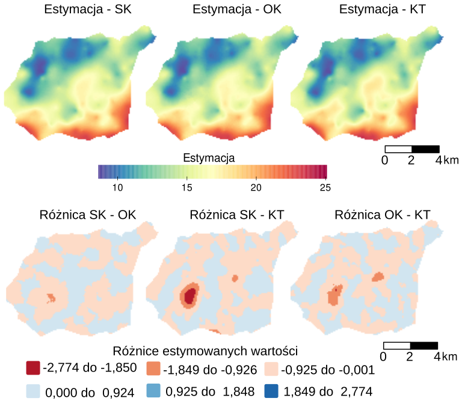
Panel górny pokazuje, że wszystkie trzy metody dają zbliżony ogólny wzorzec przestrzenny. Mapy różnic pokazują, że największe rozbieżności między estymacjami występują tam, gdzie przekroczony zostaje zasięg autokorelacji, oraz na krawędziach obszaru, gdzie następuje ekstrapolacja. Estymacje krigingu prostego dążą tam do średniej globalnej, estymacje krigingu zwykłego — do najbliższej średniej lokalnej, a estymacje krigingu z trendem — do trendu średniej wyznaczonego w najbliższym sąsiedztwie szukania.
Największe rozbieżności obserwujemy w porównaniach z krigingiem prostym: wynika to z tego, że zakłada on stałą, znaną wartość średnią dla całego obszaru, podczas gdy dwa pozostałe warianty wykorzystują wartości średnie zmieniające się lokalnie — w ruchomym oknie albo na podstawie trendu wyznaczonego w sąsiedztwie szukania.
Różnica między krigingiem zwykłym a krigingiem z trendem jest najmniejsza. Oznacza to, że lokalne przybliżenie średniej daje wyniki zbliżone do modelu uwzględniającego trend, co z kolei sugeruje, że trend w danych może być słaby albo dobrze aproksymowany przez lokalne sąsiedztwo w krigingu zwykłym.
Ocena jakości estymacji
Błąd estymacji
Jakość estymacji w geostatystyce ocenia się przede wszystkim poprzez analizę błędu estymacji, czyli różnicy między wartością obserwowaną (zmierzoną) a oszacowaną przez model:
\[\text{błąd estymacji} = \text{wartość obserwowana} - \text{wartość estymowana}\]
Im mniejsza jest ta różnica, tym lepiej dobrany został model struktury przestrzennej, czyli semiwariogram, oraz parametry obliczeń. Błąd dodatni oznacza, że estymacja była zaniżona względem pomiaru; błąd ujemny — że była zawyżona.
Błąd estymacji można analizować za pomocą map, wykresów lub statystyk jakości estymacji. Mapa pokazuje, czy błędy skupiają się w określonej części obszaru; histogram — czy ich rozkład jest symetryczny; wykres rozrzutu wartości obserwowanych względem estymowanych — czy zależność między nimi jest liniowa i czy estymacja nie jest systematycznie przesunięta.
Statystyki jakości estymacji
Statystyki jakości estymacji stosowane są do oceny jakości estymacji lub do porównania wyników między kolejnymi estymacjami: wykonanymi różnymi wariantami krigingu, przy użyciu alternatywnych modeli semiwariogramu lub z innymi parametrami sąsiedztwa szukania.
Średni błąd estymacji (MPE, ang. mean prediction error):
\[MPE = \frac{\sum_{i=1}^{n}\left(v_i - \hat{v}_i\right)}{n}\]
gdzie \(v_i\) to wartość obserwowana, \(\hat{v}_i\) — wartość estymowana, a \(n\) — liczba punktów danych. Optymalnie wartość średniego błędu estymacji powinna wynosić 0, co oznacza, że błędy przeszacowania i niedoszacowania wzajemnie się bilansują.
Pierwiastek błędu średniokwadratowego (RMSE, ang. root mean square error):
\[RMSE = \sqrt{\frac{\sum_{i=1}^{n}\left(v_i - \hat{v}_i\right)^{2}}{n}}\]
Optymalnie wartość pierwiastka błędu średniokwadratowego powinna być jak najmniejsza. Intencją stworzenia tego wskaźnika była ocena błędu absolutnego, pozbawionego znaku: potęgowanie „usuwa” znak błędu, a pierwiastkowanie umożliwia powrót do oryginalnej skali pomiarowej. Operacja potęgowania zwiększa znaczenie dużych błędów i z tego powodu RMSE jest większe od średniej z błędów bezwzględnych.
Współczynnik determinacji (\(r^2\), ang. coefficient of determination) to kwadrat współczynnika korelacji liniowej między wartościami obserwowanymi a estymowanymi:
\[r^{2} = \left[\frac{\sum_{i=1}^{n}\left(v_i - \overline{v}\right) \left(\hat{v}_i - \overline{\hat{v}}\right)} {\sqrt{\sum_{i=1}^{n}\left(v_i - \overline{v}\right)^{2}}\; \sqrt{\sum_{i=1}^{n}\left(\hat{v}_i - \overline{\hat{v}}\right)^{2}}}\right]^{2}\]
gdzie \(\overline{v}\) i \(\overline{\hat{v}}\) to średnie arytmetyczne wartości obserwowanych i estymowanych. Współczynnik determinacji przyjmuje wartości od 0 do 1; im wartość bliższa 1, tym silniejsza zależność między wartościami obserwowanymi a estymowanymi. W części praktycznej liczy go wyrażenie cor(obs, est)^2 (11 Ocena jakości estymacji).
Mierzy on siłę zależności, a nie trafność: estymacja systematycznie zawyżona o stałą wartość da \(r^2\) równe 1. Dlatego czyta się go razem ze średnim błędem estymacji.
Idealna estymacja dawałaby brak błędu oraz współczynnik determinacji między pomiarami a ich oszacowaniem równy 1, ale w praktyce idealna estymacja nie jest osiągalna: dane wejściowe mogą być obarczone błędem lub niepewnością, znaczenie ma także wielkość i reprezentatywność próby. Wysokie, pojedyncze wartości błędu mogą świadczyć o wystąpieniu wartości odstających.
Trzech statystyk nie czyta się osobno. Średni błąd estymacji bliski zeru oznacza wyłącznie, że błędy się bilansują — może więc wystąpić także wtedy, gdy pojedyncze błędy są bardzo duże, ale przeciwnych znaków. Dopiero RMSE mówi, jak duży jest typowy błąd pojedynczej estymacji.
Walidacja wyników estymacji
Walidację wyników estymacji stosujemy, gdy chcemy wybrać optymalny model semiwariogramu do wykonania estymacji albo porównać wyniki estymacji otrzymane różnymi metodami, na przykład krigingiem prostym wobec zwykłego, lub przy różnych parametrach sąsiedztwa szukania.
Obie stosowane metody walidacji wykorzystują posiadany już zbiór danych pomiarowych do wyznaczenia błędów estymacji, zamiast wymagać kosztownego i czasochłonnego zbierania dodatkowych próbek kontrolnych. Różnią się sposobem podziału danych i wiarygodnością wyników.
Walidacja podzbiorem (ang. jackknifing) polega na podziale zbioru danych na dwa podzbiory:
- treningowy, zawierający 70–80% punktów pomiarowych — wykorzystywany do stworzenia semiwariogramu empirycznego i zbudowania modelu,
- testowy, zawierający 20–30% punktów pomiarowych — dla jego lokalizacji wykonuje się kriging, a następnie porównuje wynik estymowany z wartościami pomiarowymi.
Podział należy wykonać, wybierając punkty losowo.
Kroswalidacja (ang. cross-validation) używa tych samych danych do budowy modelu, estymacji i oceny jej jakości. Procedura kroswalidacji metodą wyłączania jednej obserwacji (ang. leave-one-out cross-validation, LOO) składa się z czterech kroków:
- Zbudowanie matematycznego modelu ze wszystkich dostępnych danych.
- Dla każdej znanej obserwacji: usunięcie jej ze zbioru danych, użycie modelu do wykonania estymacji w miejscu tej obserwacji oraz wyliczenie błędu estymacji.
- Podsumowanie otrzymanych wyników w formie statystyk opisowych.
- Wizualizacja błędów estymacji.
Dla każdego punktu kroswalidacja zwraca: wartość estymowaną — obliczoną bez udziału pomiaru z tej lokalizacji, wariancję krigingową, wartość obserwowaną, błąd estymacji oraz znormalizowany błąd estymacji (ang. zscore), obliczany jako iloraz błędu estymacji i pierwiastka z wariancji krigingowej. Błąd znormalizowany pozwala porównywać błędy z obszarów o różnym zagęszczeniu sieci pomiarowej: ten sam błąd bezwzględny znaczy co innego tam, gdzie pomiarów jest dużo, i tam, gdzie jest ich mało.
Zalety i wady obu metod
| Walidacja podzbiorem | Kroswalidacja | |
|---|---|---|
| Zaleta | Niezależność danych — zbiór walidacyjny jest całkowicie niezależny od danych użytych do estymacji, dlatego metoda ta jest preferowana | Efektywność przy małych zbiorach — wykorzystuje wszystkie dostępne dane pomiarowe, co umożliwia walidację nawet bardzo nielicznych zbiorów |
| Wady | Utrata danych — proces wymaga usunięcia części oryginalnych pomiarów z obliczeń estymacyjnych, co może osłabić jakość samego modelu. Wymóg dużej liczebności — zbiór musi być na tyle duży, aby po podziale mniejszy podzbiór nadal pozwalał na obliczenie wiarygodnych statystyk jakości | Brak niezależności — ten sam zbiór danych służy zarówno modelowaniu struktury przestrzennej, jak i samej walidacji |
Zakres wniosków
Metody tej części odpowiadają na pytanie, jaka jest wartość cechy w lokalizacjach bez pomiaru i jak zmienia się podobieństwo wartości wraz z odległością. Pytanie, dlaczego rozkład przestrzenny cechy jest taki, a nie inny, wymaga odniesienia jej wartości do innych zmiennych i wykracza poza metody opisane w tym rozdziale. Pytanie o rozmieszczenie samych lokalizacji — czy punkty pomiarowe tworzą skupiska, czy są rozmieszczone regularnie — należy do metod analizy rozkładu danych punktowych (5 Metody oparte na odległości), a pytanie o podobieństwo wartości w sąsiadujących jednostkach przestrzennych — do miar autokorelacji danych obszarowych (7 Miary autokorelacji danych obszarowych).
Powiązanie z ćwiczeniami
| Grupa metod | Funkcje | Pakiet | Gdzie wykonujesz |
|---|---|---|---|
| siatka interpolacyjna i przycięcie wyniku | rast(ext =, res =, crs =), mask(), crop(mask = TRUE) |
terra |
8 Metody interpolacji |
| interpolacja deterministyczna | voronoi(), gstat(set = list(idp = )), gstat(degree = ), interpolate() |
terra, gstat |
8 Metody interpolacji |
| analiza struktury przestrzennej | hscat(), variogram(), variogram(cloud = TRUE) |
gstat |
9 Analiza i modelowanie struktury przestrzennej |
| modelowanie struktury przestrzennej | vgm(), fit.variogram(), show.vgms() |
gstat |
9 Analiza i modelowanie struktury przestrzennej |
| estymacja geostatystyczna | gstat(model =, beta =, nmax =, maxdist =), interpolate(), predict() |
gstat, terra |
10 Geostatystyczne metody estymacji |
| ocena jakości estymacji | initial_split(), training(), testing(), krige.cv() |
rsample, gstat |
11 Ocena jakości estymacji |
Opis pakietów wraz z odnośnikami do dokumentacji zawiera Załącznik A — Pakiety, a pełne zestawienie funkcji — Załącznik B — Funkcje.
Literatura
- Goovaerts (1997) — definicja geostatystyki, modele semiwariogramu, warianty krigingu.
- Nowosad (b.d.) — geostatystyka w R: miary relacji przestrzennych, modelowanie autokorelacji przestrzennej, estymacje jednozmienne, ocena jakości estymacji.
- Gimond (b.d.) — interpolacja przestrzenna, diagramy Woronoja, metoda IDW, kriging.
- Moraga (2023) — dane geostatystyczne, modele przestrzenne, kriging.
- Pebesma (2004) — opis pakietu
gstat, na którym oparta jest część praktyczna. - Lovelace, Nowosad, i Muenchow (2025) — praca z danymi przestrzennymi w R.
Pytania kontrolne
1. Kiedy zastosowanie interpolacji przestrzennej ma sens?
Wtedy, gdy interpolowana cecha charakteryzuje się ciągłością zmienności przestrzennej, rozumianą jako tendencja wzrostu zróżnicowania wartości wraz ze wzrostem odległości między punktami. Innymi słowy: wartości w lokalizacjach bliskich muszą być do siebie bardziej podobne niż w lokalizacjach odległych, a cecha nie może zmieniać się skokowo.
Chwilowa temperatura powietrza tę własność ma. Wysokość chwilowego opadu — nie: między punktem w strefie opadu a punktem tuż poza nią różnica jest skokowa, niezależnie od dzielącej je odległości, więc oszacowanie z sąsiednich punktów nie ma podstawy.
2. Co odróżnia metody deterministyczne od metod (geo)statystycznych?
Dwie rzeczy, obie rozstrzygające:
- skąd pochodzą parametry metody — w metodach deterministycznych ustalane są w oparciu o określaną często arbitralnie funkcję odległości lub powierzchni, a w metodach (geo)statystycznych wyprowadzane są w oparciu o teorię prawdopodobieństwa, z samych danych;
- co metoda zwraca — metoda deterministyczna zwraca wyłącznie oszacowanie, metoda (geo)statystyczna zwraca także oszacowanie błędu.
Metody deterministyczne są za to prostsze i szybsze obliczeniowo.
3. Które metody deterministyczne odtwarzają wartości pomiarowe dokładnie, a które je uśredniają?
Dokładnie odtwarzają: diagramy Woronoja (przepisują wartość punktu do całego jego poligonu, więc zbiór wartości na mapie jest zbiorem pomiarów) oraz funkcje sklejane (powierzchnia przechodzi dokładnie przez punkty wejściowe).
Uśredniają: metoda IDW (każde oszacowanie jest średnią ważoną wartości sąsiednich punktów, więc nigdy nie wychodzi poza ich zakres) oraz funkcje wielomianowe (jedna powierzchnia dopasowana do wszystkich punktów naraz zwykle przez żaden z nich nie przechodzi).
4. Czym różni się powierzchnia uzyskana funkcjami sklejanymi od powierzchni uzyskanej funkcjami wielomianowymi?
Zasięgiem dopasowania i relacją do punktów pomiarowych. Funkcje wielomianowe dopasowują jedną gładką powierzchnię do wszystkich punktów naraz, więc każdy punkt wpływa na jej kształt w całym obszarze, a powierzchnia opisuje ogólny kierunek zmienności i zwykle przez punkty nie przechodzi. Stąd czułość tej metody na wartości odstające — pojedynczy nietypowy pomiar przechyla całą powierzchnię.
Funkcje sklejane dają powierzchnię gładką, ale przechodzącą dokładnie przez punkty wejściowe; stosuje się je do powierzchni zmieniających się delikatnie, takich jak wysokość terenu czy wysokość zwierciadła wody.
5. Wymień cztery funkcje geostatystyki. Do której z nich należy kriging?
- Identyfikacja i modelowanie struktury przestrzennej lub czasowej — przy pomocy semiwariogramów empirycznych.
- Estymacja — szacowanie wartości cechy w miejscu lub momencie nieopróbowanym.
- Symulacja — generowanie wielu alternatywnych, równie prawdopodobnych realizacji zmienności, służących ocenie niepewności.
- Optymalizacja próbkowania — projektowanie sieci pomiarowej minimalizującej koszty przy maksymalnej ilości informacji.
Kriging należy do estymacji i jest jej najważniejszą grupą algorytmów. Interpolacja nie jest więc jedynym celem geostatystyki — pozostałe trzy funkcje odpowiadają na inne pytania.
6. Co oznacza założenie stacjonarności i co się dzieje z semiwariogramem, gdy w danych występuje trend?
Stacjonarność oznacza, że lokalne średnie i wariancje, określane na podzbiorach danych, są na całym badanym obszarze względnie stałe — nie ma ich kierunkowych zmian, czyli trendów.
Jeżeli w danych jest trend, założenie jest złamane i semiwariogram opisuje łącznie trend oraz zmienność lokalną. Semiwariancja rośnie wtedy dalej zamiast ustabilizować się na poziomie zbliżonym do wariancji próby, a odczytana semiwariancja progowa i zasięg przestają opisywać samą strukturę lokalną. Obliczenia się wykonają — zmienia się sens ich wyniku, nie ich wykonalność.
7. Dlaczego dwa pomiary o tych samych współrzędnych są problemem?
Ponieważ tworzą parę punktów o odstępie zerowym. Semiwariancja takiej pary nie daje się odróżnić od zmienności opisywanej efektem samorodka, a w obliczeniach estymacji prowadzi do układu równań bez jednoznacznego rozwiązania: dwie identyczne lokalizacje dają dwa identyczne wiersze macierzy semiwariancji.
Jest to jedno z wymagań wobec danych wejściowych, obok dostatecznej liczebności (minimalnie powyżej 30 obserwacji, zazwyczaj więcej niż 100–150), reprezentatywności dla całego obszaru, jednolitej metodyki i wystarczającej dokładności.
8. We wzorze na semiwariancję występują oznaczenia \(z(u_{\alpha})\), \(h\) oraz \(z(u_{\alpha}+h)\). Co oznacza każde z nich?
- \(u_{\alpha}\) — wektor współrzędnych, czyli lokalizacja punktu pomiarowego,
- \(z(u_{\alpha})\) — wartość badanej cechy w tej lokalizacji, nazywana ogonem (tail),
- \(h\) — odstęp (lag), czyli wektor przesunięcia między dwiema lokalizacjami,
- \(z(u_{\alpha}+h)\) — wartość cechy w lokalizacji odległej o odstęp \(h\), nazywana głową (head).
Semiwariancja jest połową kwadratu różnicy między głową a ogonem. Nazwy wskazują zwrot wektora \(h\) i mają znaczenie wtedy, gdy zmienność przestrzenna zależy nie tylko od odległości, ale też od kierunku.
9. Dlaczego semiwariogram empiryczny zastępuje się modelem?
Z dwóch powodów.
Semiwariogram empiryczny jest nieciągły — jego wartości są średnimi przedziałowymi, więc istnieją tylko dla tych odstępów, które w danych wystąpiły. Estymacja wymaga natomiast semiwariancji dla każdej kombinacji odległości i kierunku, również takiej, której w danych pomiarowych nie było. Model, jako funkcja ciągła, taki odczyt umożliwia.
Semiwariogram empiryczny jest chaotyczny — próba jest przybliżeniem rzeczywistości, obciążonym błędem pomiaru wartości i błędem lokalizacji. Dopasowanie modelu wygładza te fluktuacje.
10. Dlaczego do modelowania semiwariogramu wolno użyć tylko wybranych funkcji matematycznych?
Z powodu wymogu dodatniej określoności modelu. Model semiwariogramu nie służy wyłącznie do opisania danych — wyznacza wagi w równaniach krigingu. Tylko wybrane funkcje gwarantują, że macierz układu równań krigingu będzie możliwa do rozwiązania i że wynikowa wariancja zawsze będzie dodatnia.
W praktyce nie jest to znaczące ograniczenie, ponieważ wolno używać dowolnej kombinacji liczby i typu funkcji dozwolonych — stąd modele złożone.
11. Po kształcie krzywej w początkowym odcinku rozpoznaj model: (a) początek paraboliczny, (b) początek liniowy o dużym nachyleniu, bez skończonego zasięgu, (c) początek liniowy, semiwariancja progowa osiągana dokładnie na zasięgu, (d) krzywa rosnąca bez ograniczenia.
(a) gaussowski — paraboliczny początek oznacza, że wartości w punktach położonych blisko siebie są niemal identyczne; model daje powierzchnię ekstremalnie gładką i zwykle nie powinien być stosowany samodzielnie.
(b) wykładniczy — nachylenie początkowe \(C/a\), większe niż w modelu sferycznym; semiwariancja rośnie gwałtownie nawet między bliskimi punktami, co opisuje zjawiska o niskiej ciągłości przestrzennej. Do progu zbliża się asymptotycznie, więc podaje się dla niego zasięg praktyczny.
(c) sferyczny — nachylenie początkowe \(3C/2a\); jako jedyny z czterech osiąga semiwariancję progową dokładnie na odległości równej zasięgowi i dalej pozostaje stały.
(d) potęgowy — model nieograniczony: nie ma ani zasięgu, ani semiwariancji progowej.
12. Model nuggetowy okazał się jedynym modelem pasującym do danych. Co to mówi o danych?
Że analizowana cecha nie wykazuje autokorelacji przestrzennej w badanym zbiorze — niepodobieństwo jej wartości nie wzrasta wraz z odległością, więc semiwariancja jest stała dla wszystkich odstępów większych od zera.
Zazwyczaj oznacza to, że odstęp próbkowania był większy niż zasięg autokorelacji: struktura przestrzenna może istnieć, ale sieć pomiarowa jest zbyt rzadka, żeby się w danych ujawniła. Problem leży wtedy w próbkowaniu, nie w zjawisku, a wnioskiem jest konieczność zagęszczenia sieci pomiarowej, nie stwierdzenie braku struktury przestrzennej.
13. W krigingu zwykłym suma wag musi wynosić 1, a w krigingu prostym nie. Dlaczego? Jakie trzy informacje są potrzebne do wyznaczenia wag?
Bo warianty różnią się założeniem o średniej. W krigingu zwykłym (i z trendem) średnia jest nieznana, więc nieobciążoność estymatora wymusza się warunkiem \(\sum_{\alpha} \lambda_{\alpha}(u) = 1\): gdyby wagi sumowały się do innej wartości, oszacowanie byłoby systematycznie zawyżone albo zaniżone względem poziomu danych. W krigingu prostym średnia jest znana, więc warunek jest zbędny — wagi sumują się do wartości mniejszej od 1, a brakującą część przejmuje znana średnia (Goovaerts 1997).
Do wyznaczenia wag potrzebne są trzy informacje:
- odległości między wszystkimi parami lokalizacji punktów pomiarowych,
- odległości między punktami pomiarowymi a lokalizacją punktu estymowanego,
- dopasowany model semiwariogramu.
Dwie pierwsze pochodzą ze współrzędnych, trzecia — z etapu modelowania. Model zamienia odległości na semiwariancje, a układ równań \(K \cdot \lambda = k\) zamienia semiwariancje na wagi.
14. Dlaczego grupa blisko położonych punktów pomiarowych otrzymuje łącznie mniejszą wagę niż pojedynczy punkt w tej samej odległości?
Ponieważ przy ustalaniu wag kriging uwzględnia przestrzenny rozkład punktów, a nie tylko ich odległość od lokalizacji szacowanej. Zgrupowane punkty o podobnych wartościach przekazują łącznie mniej informacji niż pojedyncza lokalizacja — ich wartości są do siebie podobne właśnie dlatego, że leżą blisko siebie, więc powtarzają tę samą informację.
Jest to własność, której metody deterministyczne nie mają. W metodzie IDW grupa pięciu blisko siebie położonych punktów ma pięciokrotnie większy wpływ na oszacowanie niż pojedynczy punkt w tej samej odległości, mimo że niesie niemal tę samą informację.
15. Kriging zwraca wariancję krigingową. Po co w takim razie wykonuje się walidację?
Ponieważ wariancja krigingowa i błąd estymacji mierzą co innego.
Wariancja krigingowa nie zależy od zmierzonych wartości cechy, lecz od wzajemnego położenia punktów pomiarowych, ich liczby i przyjętego modelu. Opisuje więc geometrię sieci pomiarowej — pokazuje, gdzie brakuje danych — a jej mapę można narysować, znając same współrzędne punktów. Nie może powiedzieć, o ile oszacowanie rozminęło się z rzeczywistością.
Walidacja dostarcza dla wybranych lokalizacji dwóch wartości — obserwowanej i estymowanej — i pozwala je porównać. Dopiero to pozwala wybrać optymalny model semiwariogramu albo porównać wyniki uzyskane różnymi wariantami krigingu lub przy innych parametrach sąsiedztwa szukania.
- Interpolacja przestrzenna szacuje wartość cechy w lokalizacji bez pomiaru, na podstawie zbioru punktów pomiarowych i wyprowadzonych z nich reguł podobieństwa przestrzennego malejącego wraz z odległością; ma sens tylko dla cechy o ciągłej zmienności przestrzennej.
- Metody dzielą się na deterministyczne (diagramy Woronoja, metoda średniej ważonej odwrotnością odległości, funkcje wielomianowe, funkcje sklejane) i (geo)statystyczne (kriging). Rozstrzygająca różnica: metody deterministyczne nie dostarczają oszacowania błędu, a ich parametry ustala arbitralnie analityk.
- Metoda IDW liczy średnią ważoną odwrotnością odległości, więc jej wynik nigdy nie wychodzi poza zakres wartości pomiarowych, a wartości ekstremalne występują wyłącznie w lokalizacjach pomiarów. Wyższy wykładnik potęgowy daje powierzchnię mniej wygładzoną, niższy — bardziej.
- Geostatystyka ma cztery funkcje: identyfikację i modelowanie struktury przestrzennej, estymację, symulację i optymalizację próbkowania; kriging należy do estymacji. Opiera się na dwóch założeniach: przestrzennej ciągłości i stacjonarności.
- Semiwariancja jest miarą niepodobieństwa — połową kwadratu różnicy wartości w dwóch lokalizacjach odległych o \(h\). Semiwariogram empiryczny przedstawia jej wartości uśrednione w kolejnych odstępach, a model semiwariogramu zastępuje je funkcją ciągłą, z której można odczytać semiwariancję dla dowolnej odległości.
- Model opisują trzy wielkości: efekt samorodka (zmienność dla \(h = 0\)), semiwariancja progowa (maksymalny poziom zmienności przestrzennej, zbliżony do wariancji próby, jeśli cecha jest stacjonarna) i zasięg (odległość osiągnięcia semiwariancji progowej). Stosuje się wyłącznie funkcje dozwolone — nuggetową, sferyczną, wykładniczą, gaussowską i potęgową — bo tylko one gwarantują rozwiązywalność układu równań krigingu i dodatnią wariancję.
- Kriging liczy średnią ważoną, w której wagi pochodzą z modelu semiwariogramu, a nie z arbitralnie przyjętego wzoru; w krigingu zwykłym i z trendem ich suma wynosi 1, a w krigingu prostym brakującą część przejmuje znana średnia. Zwraca dwie wielkości: estymację oraz wariancję krigingową — względną ocenę niepewności wynikającą z rozmieszczenia punktów pomiarowych i z przyjętego modelu, a nie z wartości badanej cechy. Trzy warianty różnią się założeniem o średniej: znana i stała (kriging prosty), stała i nieznana (kriging zwykły), zmieniająca się z położeniem (kriging z trendem).
- Trafność estymacji ocenia błąd estymacji (obserwowane − estymowane) i trzy statystyki: MPE optymalnie 0 (błędy się bilansują), RMSE jak najmniejszy (duże błędy ważą więcej), \(r^2\) — kwadrat współczynnika korelacji obserwacji z estymacjami — jak najbliższy 1, przy czym mierzy on siłę zależności, nie brak obciążenia. Dostarcza ich walidacja: podzbiorem (dane oceniające niezależne, wymaga dużego zbioru) albo kroswalidacja (wykorzystuje wszystkie obserwacje, ale ten sam zbiór służy modelowaniu i ocenie).